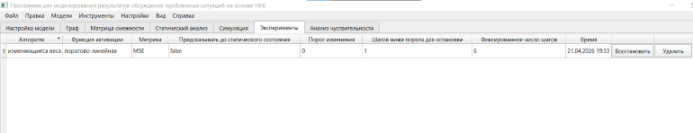
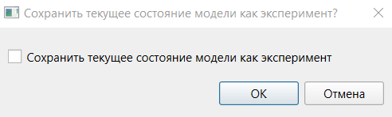

1. Work with experiments is performed on the experiments tab. To switch to this tab from another tab, click the "Experiments" header.

2. Experiments are snapshots of the model taken at the moment a simulation starts. They include terms, all concept and weight parameters, and all forecasting parameters. The tab contains an experiments table that shows all forecasting parameters and the simulation start time. The table can be sorted by columns in the same way as the table on the static analysis tab. By default, the table is sorted by descending simulation start time.
3. Clicking the "Restore" button in an experiment row opens the experiment loading dialog. In this dialog, the user chooses whether to save the current model state as a new experiment. By default, this flag is not set. As a result of loading, the model state is updated, meaning that the settings of the selected simulation are restored.

4. Clicking the "Delete" button removes the experiment from the list.